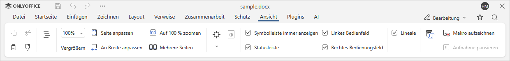

Makros verwenden
Um Ihre Arbeit effizienter zu gestalten, verwenden Sie Makros, um wiederkehrende Aktionen auszuführen und die Datei schnell zu bearbeiten.
Erfahren Sie mehr über Makros und wie man sie schreibt in unserer API-Dokumentation.
Aufzeichnung von Makros
Sie können Ihre Makros nicht nur schreiben, sondern auch unterwegs aufzeichnen.
-
Gehen Sie zur Registerkarte Ansicht.

- Click the Record macro button.
- Klicken Sie auf die Schaltfläche Makro aufzeichnen.
-
Führen Sie die Schritte des Prozesses aus, den Sie in ein Makro umwandeln möchten. Nur die Aktionen, die direkt den Aktionen in der Docs API entsprechen, werden aufgezeichnet, z. B.:
- Formatierung eines Textes;
- Einfügen von Bilder, Formen und Gleichungen;
- Bearbeitung von Formen und Anpassen der Formeinstellungen.
- Klicken Sie auf der Registerkarte Ansicht auf Aufnahme pausieren, um den Aufnahmevorgang bei Bedarf vorübergehend zu unterbrechen.
-
Klicken Sie auf die Schaltfläche Aufnahme beenden, um die Aufnahme zu beenden. Das resultierende Makro wird automatisch gespeichert.
Aufgezeichnete Makros werden als JavaScript-Code generiert, der auf der Docs API basiert.
-
Um auf die aufgezeichneten Makros zuzugreifen und diese zu bearbeiten, klicken Sie auf die Schaltfläche Makros auf der Registerkarte Ansicht. Bearbeiten Sie das gewünschte Makro nach Bedarf.
Bitte beachten Sie, dass alle gespeicherten Makros keine eigenständigen Dateien sind und nur über das Dokument zugänglich sind, in dem sie gespeichert wurden.